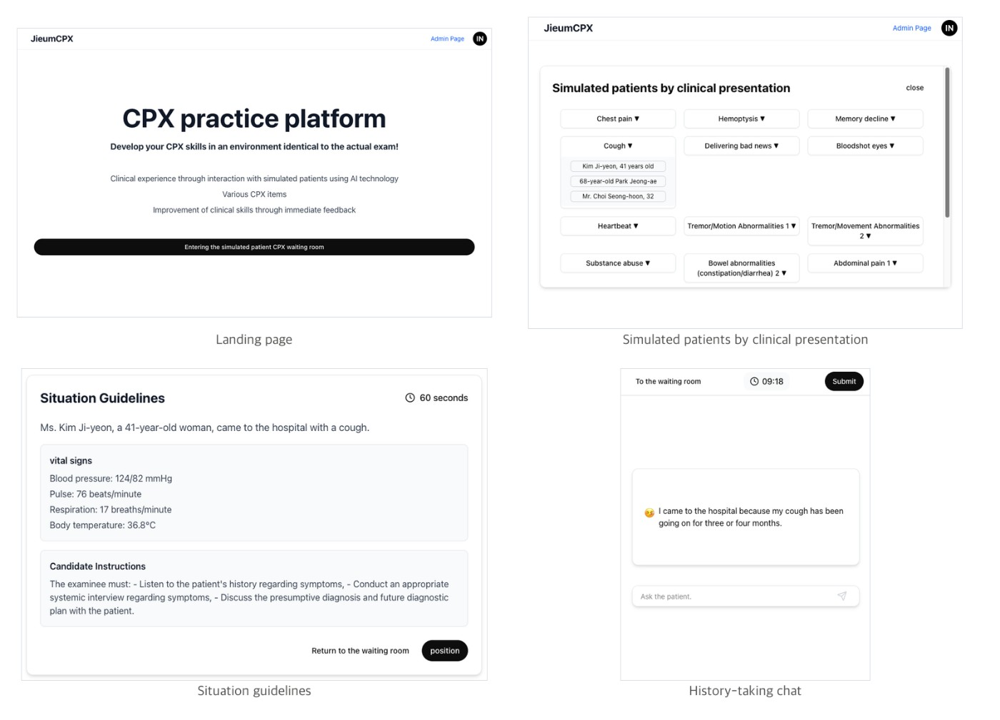

练习入口不等于临床能力
组织标准化病人练习需要安排人员、情境与反馈，医学生很难随时重复完整访谈。OSCE-SimBench相关研究把准备和练习拆成两部分：先生成并审查情境，再让学生通过文字向模拟病人提问，结束后对照清单回看。论文于10月21日07:08 UTC提交，早于主窗口，归入近三日补充。它关注教学与评估资源，不能把模拟回答写成对真实患者的医疗建议，也不能把即时分数当成专业能力认证。实际产品价值应落在练习机会和反馈质量，而非仅增加对话次数。
OSCE-SimBench / Virtual Standardized Patients · 论文 / 研究原型
同一项目的完整分析。研究截止为08:03:02Z；来源核验与图片获取在后，不改变事件日期。

组织标准化病人练习需要安排人员、情境与反馈，医学生很难随时重复完整访谈。OSCE-SimBench相关研究把准备和练习拆成两部分：先生成并审查情境，再让学生通过文字向模拟病人提问，结束后对照清单回看。论文于10月21日07:08 UTC提交，早于主窗口，归入近三日补充。它关注教学与评估资源，不能把模拟回答写成对真实患者的医疗建议，也不能把即时分数当成专业能力认证。实际产品价值应落在练习机会和反馈质量，而非仅增加对话次数。
管线以症状和人物资料组织情境，GPT-4.1帮助准备清单与叙述，专家参与检查；实时病人扮演和自动评价使用GPT-4o。学生选择情境、查看说明与生命体征，然后在计时文字聊天中提问。短回答限制意在保持病人的交流角色，避免模型主动给出所有答案；结束后的清单评分则检查问过什么。仓库实际提供生成、终端模拟和评分代码，标注Apache2，但明确网页应用本身未包含。读者因此可以研究组成部分，不能把拉取仓库等同于部署同一套网页服务；模型调用仍需密钥与费用。
静态比较让17名高年级医学生给四种模型与一位专家参考的回答评分，三个病例、70个输入形成7,480项评分。逐句流畅与相关性不能保证整段一致，不同指标也并非每项差异都有统计显著性。另一个资源是同一批参与者在平台上产生的49次会话、27个情境和1,763轮问答，不能当成独立学习成效试验。论文的数据许可为CC BY-NC-SA，代码许可与数据使用条件要分别理解。本轮没有独立验证评分正确性，资料集页面读取失败，不能假定每个已描述数据都可直接取得。研究范围是韩语医学教育，不应直接推断其他语言的访谈表现。
真人标准化病人、教师逐段复核与同伴角色扮演仍是替代方案，尤其能提供语调、表情和手势信息。当前文本原型无法覆盖这些线索，专家参考也只有一人，病例不足以代表所有专科。可证伪试点应把模拟中的遗漏带到后续真人练习，检查学生是否更会追问、是否误信编造内容，以及教师改正自动评分花多少时间。用户应能回到导致扣分的具体问答，并区分模型评分与教师确认；这是本刊建议。若更多练习只提高自动分数，却没有改善真实沟通，训练界面仍未兑现教学价值。也应允许教师标记无效情境，防止同一个错误病例在后续练习中反复强化。